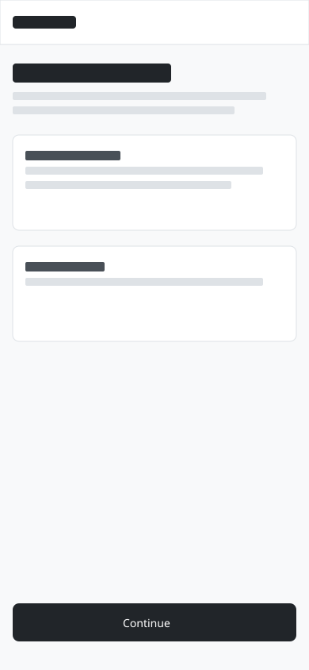

Source file for steps 1 - 4; adapt slug and regions for your page.
Toolkits / Design
Walkthrough
Wireframe a flow in Excalidraw
Produce structure-only Excalidraw wireframes using Freya’s rules - layout and labels in the file, intent in the step spec. No annotations in the canvas.
Prerequisites: Excalidraw (web or VS Code extension), Freya wireframe skill or this page, ~20 minutes.
After this walkthrough
You will have a mobile wireframe (
390 × 844) under work/design/wireframes/, editable in Excalidraw, following structure-only rules.
Start here
Freya’s golden rules before you open Excalidraw.
Who this is for
| Role | Why run this |
|---|---|
| UX designer (Freya) | Structure-only layouts Mimir can implement without design debates |
| PM / founder | Readable flow artefacts without high-fidelity polish |
| Builder | One .excalidraw per screen with labelled regions |
What you’ll have
- No annotations in the wireframe; rationale in step
.mdspec - Canvas: desktop
1440 × 900or mobile390 × 844, background#f8f9fa - Clean lines:
roughness: 0, WDS palette from wireframe skill - Buttons grouped with labels via shared
groupIds
Why wireframes
Concrete shift in how specs reach build - not “draw more screens” advice.
Before Screenshots or prose-only specs; engineers guess layout.
After
One Excalidraw file per page slug under work/design/wireframes/ - WDS installs may use _bmad-output/D-UX-Design/wireframes/ instead. Builders implement from structure without design debates on Slack.
Walkthrough
Run in order. Steps 1 - 3 set up structure; step 4 is the exit check.
-
Step 1
Choose slug and path.
work/design/wireframes/[page-slug].excalidraw # WDS installs may use: # _bmad-output/D-UX-Design/wireframes/[page-slug].excalidraw # Education samples on this site: # toolkits/artefacts/wireframe-with-excalidraw/sample-flow.excalidraw
Expected: file path matches page slug; one screen per file.If it fails: Wrong canvas size mixed on one frame - split mobile and desktop into separate files.
-
Step 2
Set canvas size.
In Excalidraw, set background
Expected: frame dimensions match target breakpoint; background colour set.#f8f9fa. Frame mobile at 390×844 or desktop at 1440×900.If it fails: Hand-drawn roughness - set
roughness: 0for production wireframes in WDS. -
Step 3
Draw regions only.
Nav, content cards, primary CTA. Use grey bars (
Expected: every interactive region visible; no callout annotations on canvas.#dee2e6) for body text placeholders; real text only when words matter for comprehension.If it fails: Icons without labels - use labelled rectangles for icon slots per Freya rules.
-
Step 4
Export for HTML embed (optional).
Export PNG/SVG for toolkit pages; keep
Exit: developer can open file and see every interactive region without reading a paragraph spec..excalidrawas source of truth.If it fails: PNG looks fine but SVG embed breaks - keep
.excalidrawas source; export SVG with Arial-friendly labels only.
Further reading
Public tools and upstream design-process references.
| Name | Type | Why this one | Link |
|---|---|---|---|
| Excalidraw | Tool | Open JSON format; VS Code + web editor | excalidraw.com |
| Excalidraw GitHub | Repo | File format reference and VS Code extension | GitHub |
| Whiteport Design Studio | Repo | Freya wireframe skill, palette, and grouping rules (if you use WDS) | GitHub |
Sample artefact
Structure-only mobile flow - edit in Excalidraw, not in generated SVG.

Downloads
Take these into your repo - each file maps to a step above.
-
sample-flow.excalidraw -
sample-flow.svg Web embed export from step 4.
{kind=link}
Troubleshooting
Symptom → fix, tied to the step where it usually appears.
- Annotations on canvas. Step 3 - Move callouts to the step markdown; wireframe stays structural.
- Hand-drawn roughness. Step 2 - Set
roughness: 0for production wireframes in WDS. - Wrong canvas size. Step 1 - Mobile and desktop mixed on one frame confuses implementation - one screen per file.
- Icons without labels. Step 3 - Use labelled rectangles for icon slots per Freya rules.
Optional on this site
Companion walkthroughs on this site. You do not need them to create wireframes.
Attribution. Excalidraw (MIT). Starter templates / process - adapt for your organisation. Not affiliated with Excalidraw or Whiteport Design Studio maintainers.